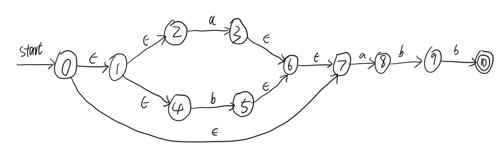

最近进行了编译原理的实验，实验的内容如标题所述，分为“将输入的NFA(不确定有穷自动机)转换为DFA(确定的有穷自动机)”以及“将输入的DFA最小化”两个部分。实验结束后，我对实验的相关信息进行了整理，总结出了这篇记录。本记录包含了实验说明、NFA转DFA以及DFA最小化的方法(实验原理)、java源码、以及若干输入输出样例。
实验说明
试验内容
实验分为以下两个部分:
- 从文件中读取存储的NFA，并编程实现子集构造法将NFA转换为DFA。
- 从文件中读取存储的DFA，并编程实现等价划分法将读入的DFA最小化。
输入数据格式
程序的输入来自txt文本文件，输入的内容包括：
- 字符集中的字符个数及字符集中的字符
- 有穷自动机的状态个数及各个状态
- 开始的状态编号
- 接受状态个数及各接受状态
- 各状态在各输入符号下的转换状态集合
其中，所有数量相关数据必须为整型，字符和状态可以为任意的不包含空格的字符串，字符间以及状态间不能有重复。
以下是输入数据格式的样例和相应的说明:
1 | 数据 说明 备注 |
输出说明
输出中应包含形成DFA的以下内容：
- 状态列表(包含各新状态的编号以及对应的原状态的集合)
- 开始状态
- 结束状态集合
- 状态转换表(可以参考输入数据中的表示方式)
实验原理
NFA转DFA(子集构造法)
记输入NFA为N，输出的DFA为D (注意，DFA中每个状态对应原NFA中的一个或多个状态的集合)。定义转换表Dtran，Dtran[T, a]表示DFA的某个状态集合T在输入a时转换到达的状态的集合。
定义如下操作:
- e-closure(s): 从状态s开始只通过epsilon转换可达的状态的集合(可以视为状态s在自动机上的epsilon闭包)
- e-closure(T): 状态集合T中的所有状态只通过epsilon转换可达的状态的集合(同上)
- move(T, a): 状态集合T中的所有状态在输入为a时转换可达的状态的集合(仅单次转换, 并非在a上的闭包)
则有子集构造法的伪代码:
1 | 定义Dstates，表示D的状态集合 |
生成的DFA的开始状态就是伪代码中的e-closure(s0)，结束状态是DFA的状态中所有包含了原NFA的结束状态的状态。
DFA最小化(等价划分法)
首先，我们对DFA的所有状态进行分组，初始化时，我们将其分为接受状态组和非接受状态组，其中接受状态组由原NFA中所有的接受状态组成，非接受状态组由其余状态构成。
对于每个分组，当对于所有输入符号，分组内的所有状态在输入符号相同时均能转换到相同的分组，则我们认为分组内的所有状态等价，否则我们根据转换到达的分组对当前分组内的状态进行重新划分。
不断对分组列表中的各分组按照上述方法进行划分，当不能继续划分分组时，划分完成。此时，对最终的各分组进行编号，对应新的DFA的各个状态。从每个分组中任选一个代表，以该代表在符号a上的输入跳转到的分组作为该分组在输入符号a上的转换到的状态，按此规则构建各个新状态在各符号上的转换所达状态，最终得到最小化后的DFA，最终的DFA中开始状态是包含了原DFA开始状态的分组，结束状态是所有包含了原DFA结束状态的分组。
该等价划分法伪代码如下：
1 | 构建分组集合Groups，初始化时其中仅包含接受状态组和非接受状态组 |
java代码及说明
NFA转DFA
辅助类
首先，根据子集构造法，注意到生成的DFA的每一个状态对应的是原NFA中的一个或多个状态的集合，而该构造法中涉及到多次判断状态集合是否已存在，考虑将状态集合视为一个bit数组，每个bit对应一个状态，如果该状态包含在集合中则该状态置为1，否则置为0，每32个bit可以存放在一个int型中，这样比较两个集合是否相等可以转换为若干int型数据的比较。我本来是打算直接使用java中的BitSet，可能是我水平太渣了，总感觉java的BitSet用起来有点“不对口”，于是，自己写了一个简陋BitSet。
由于这个类实在是简单，我就不进行说明了，直接上代码：
1 | import java.lang.StringBuilder; |
虽然质量可能不怎么样吧，但至少能用…
类成员总览
我将实现NFA转DFA的类命名为NFA2DFA，该类用到的包及类的成员如下：
1 | import java.io.File; |
变量部分个人认为就不需要介绍了，看注释也基本上知道是什么了，下面对各个函数进行说明。
函数说明
NFA2DFA()构造函数
构造函数，构建各个变量。
代码如下：
1 | //初始化 |
clearData()函数
该函数的功能就是清除存储在变量中的各数据，便于读入新数据。实现该函数主要是考虑到该类的对象可能需要读入新的NFA进行第二次计算。
代码如下：
1 | //清除所有数据 |
ReadData(String FilePath)函数
该函数功能是从文件中读入数据，先使用File类打开文件，并判断文件是否存在。之后使用FileReader以及Scanner类将其包装成输入流，便于读取数据，之后就是按照数据的输入格式依次读取数据就行了，这里我偷了个懒，没有处理如果输入的格式不对或缺少数据的情况XD。
代码如下:
1 | //从文件中读取数据 |
Transition()函数
该函数使用读入的数据进行转换，转换后的结果被存放在相应的成员变量中。函数首先判断是否进行了读取数据的操作，没有则抛出异常；之后函数按照子集构造法的流程进行，先计算开始状态闭包，之后从新的开始状态集合开始依次处理。最后整理新状态中的结束状态。
这里我并没有使用标记来标识状态是否处理，我的想法是使用ArrayList，从数组的首部遍历到数组的结尾，将新状态追加到数组的尾部，这样就能保证对数组的一次遍历即可处理完所有的状态，由于数组的长度会随遍历处理的过程中新状态的产生而增加，所以for循环的循环变量上限是DFA_StateList.size()，而不是常数。
代码如下：
1 | //转换操作 |
epsilonClosure(BitSet curState)函数
该函数用于计算输入状态curState的epsilon闭包，有多种实现方法，我的实现方案是使用带标记位的BFS，此处我使用了while循环代替了递归调用。
代码如下：
1 | //epsilon闭包 |
move(BitSet curState, int signIndex)函数
该函数用于计算从当前状态集合curState经下标为signIndex的输入符号转换可达的状态集合，实现起来就是一次BFS，连递归调用都免了。
代码如下：
1 | //从当前状态curState经过signIndex对应的符号所能到达的所有状态的集合 |
ShowResult()函数
该函数就是打印输出结果，我又偷了个懒，没有按照DFA的存储格式输出到文件，直接输出到控制台了XD
代码如下：
1 | //输出结果 |
运行说明
在主函数中，声明并创建一个NFA2DFA对象，依次调用对象的ReadData(String FilePath)、Transition()和ShowResult()函数即可。由于我在类的成员函数中使用了throw语句抛出异常，如果懒得使用try-catch包围就直接在main函数throws Exception吧…
示例如下：
1 | public static void main(String [] args) throws Exception |
DFA最小化
类成员总览
实现DFA最小化的类被我命名为MinimizeDFA，该类用到的包及类的成员如下：
1 | import java.io.File; |
需要说明的是，这个类没有使用自定义的辅助类型BitSet，此外，由于分组列表需要进行多次拆分操作，涉及到多次的随机删除和插入，所以我使用了LinkedList而不是ArrayList来存放分组列表。
函数说明
MinimizeDFA()函数
构造函数，构建各成员变量。
代码如下：
1 | //初始化 |
clearData()函数
与NFA2DFA的情况相同，考虑到可能二次读取数据，提供一个清空成员变量的函数。
代码如下：
1 | //清除所有数据 |
ReadData(String FilePath)函数
与NFA2DFA类似，从文件中读入数据。
代码如下：
1 | //读取数据 |
Minimize()函数
该函数根据等价划分法，对DFA进行最小化。各分组采用ArrayList<Integer>保存，数组内的数据是该分组包含的状态在状态列表中的下标；分组被存放在分组列表，该列表使用LinkedList<ArrayList<Integer>>来实现。
函数先将输入状态分为接受状态组和非接受状态组，之后使用while循环不断对分组列表中的各分组进行划分操作。由于每当一个分组发生了分裂就可能造成先前处理过的分组也发生分裂，因此需要不断循环遍历分组列表来进行处理，直到在一次遍历中没有分组发生分裂为止。
在划分完成后，分组唯一确定，此时每个分组就是最小化后的DFA中的一个状态。函数默认使用各分组中的第一个状态作为该分组的代表，以代表在各输入符号上的转换情况表示整个分组在各符号上的转换情况，来构建最小化后的DFA的状态转换表。
最后函数循环遍历分组列表以确定最小化后的DFA的开始状态和接受状态集合。
代码如下:
1 | //进行最小化操作 |
GroupUp(ArrayList curGroup, int signIndex)函数
该函数是Minimize()函数的辅助函数，功能是针对输入的分组curGroup使用下标为signIndex的输入符号对该分组内的状态进行重划分，最后返回新的分组集合。我的做法是先计算出输入分组内各状态在该符号下跳转到的分组的下标，每获取到一个下标就检查该下标是否已有，没有则记录该下标并为其创建一个分组。最后遍历输入分组中的各状态，并将其放入其转换到的下标的分组中，最后返回生成的所有分组。
代码如下：
1 | //分组辅助函数，返回按当前符号进行划分的分组 |
ShowResult()函数
输出最小化后的结果，我又偷懒直接输出到控制台了XD
代码如下：
1 | //结果输入 |
运行说明
与NFA转DFA的情况差不多，就不多说了…
示例如下：
1 | public static void main(String [] args) throws Exception |
程序测试
NFA转DFA测试
测试一
用例
NFA:

理论上转换后得到的DFA:
| 新状态编号 | 对应原状态集合 |
|---|---|
| 0 | 0 1 2 4 7 |
| 1 | 3 6 7 8 |
| 2 | 5 6 7 |
| 3 | 8 |
| 4 | 9 |
| 5 | 10 |
输入数据
1 | 2 |
输出结果
测试二
用例
NFA:
理论上转换后得到的DFA:
| 新状态编号 | 对应原状态集合 |
|---|---|
| 0 | 0 1 2 3 4 6 7 9 10 |
| 1 | 1 2 3 4 5 6 7 9 10 |
| 2 | 1 2 3 4 6 7 8 9 10 |
输入数据
1 | 2 |
输出结果

测试三
用例
NFA:
理论上转换后得到的DFA:
| 新状态编号 | 对应原状态集合 |
|---|---|
| 0 | 0 1 2 3 |
输入数据
1 | 2 |
输出结果
DFA最小化测试
测试一
用例
DFA:
理论上最小化后的DFA:
| 新状态编号 | 对应原状态集合 |
|---|---|
| 0 | A C |
| 1 | B |
| 2 | D |
| 3 | E |
输入数据
1 | 2 |
输出结果
测试二
用例
DFA:
理论上最小化后的DFA:
| 新状态编号 | 对应原状态集合 |
|---|---|
| 0 | A |
| 1 | C |
| 2 | D E F |
| 3 | B |
输入数据
1 | 2 |
输出结果
测试三
用例
DFA:
理论上最小化后的DFA:
| 新状态编号 | 对应原状态集合 |
|---|---|
| 0 | A C |
| 1 | B |
| 2 | D |
| 3 | E F G H I |
输入数据
1 | 2 |
输出结果